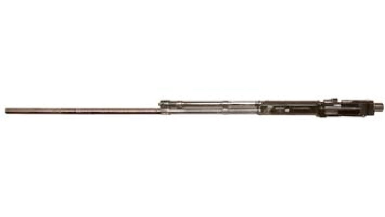

Авіаційна гармата Б-20
За несколько месяцев до начала Великой Отечественной войны, в марте 1941 года, ведущий конструктор тульского ЦКБ-14 Михаил Евгеньевич Березин по собственной инициативе взялся за разработку увеличенной версии своего пулемета УБ. На тот момент 12.7-мм пулемет УБ в синхронном, крыльевом и турельном варианте был только запущен в производство и, все еще страдая детскими болезнями, находился на стадии доводки. Тем не менее, потенциал нового оружия был очевиден – легкое, компактное, скорострельное и мощное оружие в годы грядущей войны станет одним из столпов отечественного авиационного вооружения. В этой связи было соблазнительно "смасштабировать" пулемет до 20-мм калибра, чтоб, сохранив общую компоновку пулемета, реализовать его более мощный аналог, способный заменить в серии пушку ШВАК, в которой в жертву скорострельности были принесены технологичность, масса и компактность, а также мощность боеприпаса.
В новом оружии М.Е. Березин применил опытный боеприпас 20х110, разработанный в 1937 году, который планировался для ряда отечественных авиационных и зенитных систем, разрабатываемых в предвоенные годы. 128-граммовый снаряд обладал почти в полтора раза более мощной энергией, чем серийный ШВАК-овский 20х99R.
Пушка Березина, поступившая на испытания в первые дни после начала войны, несколько подросла в габаритах по сравнению с пулеметом, но масса ее не превышала 28 кг, что выгодно контрастировало со ШВАКом. При этом темп стрельбы ее в крыльевом варианте ничуть не уступал изделию Шпитального и Владимирова, достигая 750 выстр/мин.
Разработанная в крыльевом и синхронном варианте пушка Березина, в документах того периода, обозначаемая как УБ-20 обещала стать весьма мощным оружием. О значении ее доводки говорит приказ Народного Комиссариата вооружений от 13 июля 1941 года No. 266сс за подписью Д.Ф. Устинова:
"В соответствии с распоряжением ГКО от 11 июля 1941 года о форсировании испытаний и обработки 20 мм пушки Березина:
Провести до 16 июля 1941 года заводские испытания двух 20 мм пушек Березина.
К 18 июля 1941 года подать на полигонные испытания три 20 мм пушки Березина, в т.ч. две крыльевые и одну моторную.
Принять участие в работах НКАП по установке к 25 июля 1941 года на самолетах ИЛ-2 двух 20 мм крыльевых пушек Березина и на самолете ЛАГГ-3 20 мм моторной пушки Березина.
Принять участие в летных испытаниях самолетов ИЛ-2 и ЛАГГ-3 с 20 мм пушками Березина."
Как минимум две синхронные пушки УБ-20 проходили испытания в августе 1941 года на истребителе ЛаГГ-3. Они были установлены на месте штатных пулеметов ШКАС, мотор-пушка ШВАК была сохранена.
По всей видимости, установить крыльевые пушки УБ-20 на Ил-2 не успели. Величина отдачи пушки, использующей более мощный патрон оказалась чрезмерной для первых серий Ила.
Строки из письма, адресованного Шахурину и Устинову от 2 августа 1941 года No. 978с :
"По вопросу: установки пулемета УБ-20 на сам. Ил-2.
Во исполнение решения ГКО установить пулемет УБ-20 на машину Ил-2, мы запросили величину силы отдачи УБ-20.
В ответ на это, уже после того, как мы спроектировали всю установку и сделали все чертежи, нами получено 28.VII.41 г. письмо от главного инженера ЦКБ-14. В этом письме сообщается, что энергия отдачи УБ-20 равна 19 кг м.
С другой стороны, в процессе проектирования установки УБ-20 на Ил-2, Березиным дана амортизационная пружина, у которой энергия отдачи равна 4,2 кг м.
Таким образом, расхождение в сообщенных цифрах в четыре с лишним раза.
Если энергия отдачи равна 19 кг м, то эту работу лафет УБ-20, на Ил-2, поглотить не может.
Нам непонятно почему из одной и той же организации исходят совершенно разные данные и поэтому прошу Вас в срочном порядке сообщить, что правильно: данная Березиным пружина с лафетом или данные письма гл. инженера ЦКБ-14 от 25.VII.41 г. за N 01171с."
Дальнейший ход событий проследить уже не представляется возможным. В сентябре последовала эвакуация ЦКБ-14. Из прифронтовой Тулы завод и КБ переехали в Златоуст Челябинской области. Кроме того, во время командировки в Ногинск, М.Е. Березин попал в автокатастрофу и получил перелом позвоночника, что также, безусловно, повлияло на сроки работ. Все это внесло свои коррективы в развитие пушки Березина, в итоге задержав ее выпуск до самого конца войны.
Кто-то из руководителей посчитал нецелесообразным развивать пушку под нестандартный боеприпас, приказав переделать ее под серийный ШВАК-овский патрон. Отчасти это было логичным – организовывать выпуск нового патрона, пусть и более мощного в условиях военного времени в эвакуации не было никакой возможности. Но в итоге, М.Е. Березин был вынужден почти полностью перепроектировать затвор орудия. И виной тому пресловутый фланец-закраина на серийном патроне 20х99R.
Чтобы обеспечить высокий темп стрельбы, при отказе от сложного и нетехнологичного барабанного механизма ШВАКа, Березин ввел в конструкцию затвора узел извлекателя патрона, кинематически связанный с ползуном затвора. Неоценимую помощь в разработке пушки М.Е. Березину оказал другой известный советский оружейник В.И Силин, автор ряда интересных образцов вооружения.
Во избежание распатронивания боеприпаса, то есть выпадения снаряда из гильзы, что было характерно при высоком темпе стрельбы, Силин предложил зацепы, извлекающие патрон из звена ленты, перенести на затворную раму, что исключило получение неустранимых задержек при стрельбе.
Кроме того, изменению подверглась конструкция клинового затвора - в пушке запирание затвора при выстреле производилось вертикальным клином, расположенным вдоль оси пушки, а не боковым, как у пулемёта УБ.
В результате доводка, а по сути, заново спроектированной пушки, затянулось до конца 1943 года, когда первые образцы орудия под ШВАК-овский патрон были предъявлены на испытания.
Первоначально были разработаны моторная и синхронные версии пушки, внешне весьма похожие на аналогичный пулемет УБ. Встречаются обозначения их как Б-20М и Б-20С, хотя, скорее всего буквенные индексы исполнения пушки неофициальные, поскольку в документации пушки Б-20 никак не различались.
А вот турельная версия Б-20 имела более серьезные внешние отличия. Опыт эксплуатации турельных УБ, ШКАС и ШВАК, имевших газоотводную трубку поверх ствола, выявил неудобство такой конструкции ввиду того, что линия прицеливания оказывалась слишком высоко. В этой связи на турельной версии пушки М.Е. Березин изменил конфигурацию газоотводной схемы, разместив газоотводную трубку с газовым поршнем и регулятором с левой стороны ствола, что позволило сделать турельную установку более компактной. Кроме того, одновременно под установку турельных пушек Б-20 были разработаны турели с силовым электроприводом ВУ-9, которые предполагались к использованию на новом поколении советских бомбардировщиков и штурмовиков. Турельная версия пушки с электроприводом имела обозначение Б-20Т-Э.
Отечественный авиапром возлагал большие надежды на новую пушку. Так уже в феврале 1944 года прототип нового истребителя Ла-7 был спроектирован под установку трех синхронных пушек Б-20. В июне - июле 1944 года в НИИ ВВС удалось провести первые испытания трех синхронных мушек Б-20 на одном из истребителей Ла-7. Они выявили, что при выбросе гильз в воздух из зализов крыла случались повреждения консолей крыла и хвостового оперения. Машину доработали, сделав выброс гильз под фюзеляж, и в сентябре вновь испытали в НИИ ВВС.
Но в 1944 году у пушки Березина появились уже и конкуренты. Конструктор КБ-2 С.В. Владимиров представил свою В-20, Б.Г.Шпитальный – Ш-20. Обе конкурирующие системы имели схему автоматики на основе короткого отката ствола, в отличие от более традиционной газоотводной схемы у Березинской Б-20. Все три системы были весьма легкими и компактными, но при общих равных, темп стрельбы у пушки Березина был несколько выше, без синхронизатора достигая 800 выстр/мин. Правда, в связи со схемой стрельбы с открытого затвора, при которой на первый выстрел тратилось несколько большее время, в синхронном исполнении пушка Б-20 стреляла значительно медленнее – порядка 600-650 выстр/мин, чем изделие Владимирова.
Однако, именно схема закрытого затвора у пушки В-20 поставила на ней крест – при длинной очереди, последний патрон, оказывающийся в разогретом патроннике имел свойство к самовоспламенению, чего не могло априори случиться с пушкой Березина, которая, в конце концов и вышла в финал конкурса.
11 октября 1944 года постановлением ГКО No. 6681 "О принятии на вооружение ВВС Красной Армии облегчённой авиационной автоматической пушки Б-20 калибра 20 мм конструкции т. Березина" пушка Б-20 была официально принята на вооружение Красной Армии с развертыванием массового производство на Ковровском заводе.
Только до конца 1944 года промышленность сдала 2275 пушек Б-20, в следующем, 1945-м еще 7240 штук.
Впрочем, первые серийные Б-20 были далеки от идеала. Преждевременный выход из строя был в порядке вещей. Стандартного отстрела в 5000 выстрелов они не выдерживали. Средний ресурс пушки Б-20 составлял 3200 выстрелов. В результате большая часть выпущенных Б-20 отправлялась на склады, на боевые самолеты в последний год войны пушки Б-20 почти не попадали.
Так, не смотря на то, что истребитель Ла-7 изначально был спроектирован под три 20-мм пушки Б-20, львиная доля их воевала с парой старых ШВАКов. Из без малого 6 тыс. выпущенных Ла-7, лишь 368 из них несли проектное вооружение из трех Б-20.
Устанавливались синхронные Б-20 на поздних сериях истребителей Як-3 и Як-9У, на ряде экспериментальных машин.
Турельная Б-20Т-Э испытывалась на штурмовиках Ил-8 и Ил-10, но, в итоге, в связи с недоведенностью, на серийных Ил-10 от нее отказались в пользу проверенного УБТ.
В итоге, в годы 2-й Мировой войны повоевать пушкам Б-20 практически не довелось. Приемлемой надежности ее работы добились лишь после окончания боев. Одновременно стало очевидным, что и без того слабый ШВАК-овский снаряд к 1945 году окончательно устарел. А в качестве курсового вооружения советской послевоенной авиации гораздо лучше подходит новая 23-мм пушка НС-23, легкая, компактная, но несравнимо более мощная.
Лишь в качестве оборонительного вооружения турельная Б-20 некоторое время использовалась на оборонительных установках штурмовиков Ил-10М и послевоенных сериях бомбардировщиков Ту-2. Какое-то время пушечные дистанционно-управляемые установки тяжелого Ту-4 также вооружались пушками Б-20, но и там их вскоре заменили на более мощные НС-23.
Характерно, что для послевоенных машин была разработана новая турельная электрофицированная версия пушки - Б-20Э, отличная от Б-20Т-Э тем, что приемник был расположен вертикально с подачей ленты сверху вниз, то есть, по сути, версия Б-20Э представляла собой стандартную курсовую пушку Б-20, установленную на бок.
Общее количество выпущенных серийно пушек Б-20 всех моделей составило 15 353 штуки. Производство осуществлялось до 1949 года. В 1946 было выпущено 440 штук, в 1947 – 780 штук, в 1948 – 1686 штук и в 1949 году – 2931 штука.
Остается лишь сожалеть, что не была во время реализована самая первая мощная версия УБ-20 образца 1941 года, которая могла бы стать достойной заменой ШВАКу. К сожалению, к моменту появления серийной Б-20 актуальность ее потеряла всякую остроту.
| Модификация | Б-20 |
| Калибр, мм | 20 |
| Тип автоматики | газоотвод |
| Масса, кг | 25 |
| Длина, мм | 2035 |
| Длина ствола, мм | 1588 |
| Темп стрельбы, выстр/мин | 600 (синхронная) 800 |
| Начальная скорость снаряда, м/с | 790-815 |
| Емкость магазина, патронов | лента |
| Масса снаряда, г. | 96-99 |
| Тип боеприпаса | 20х99R |